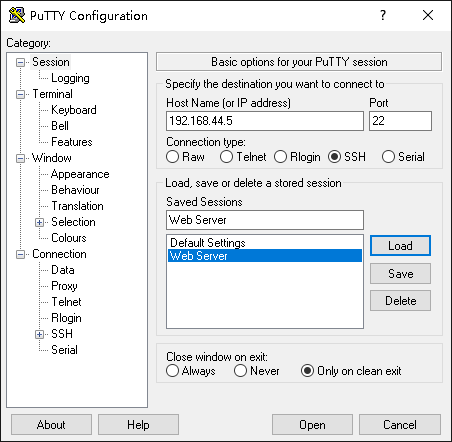
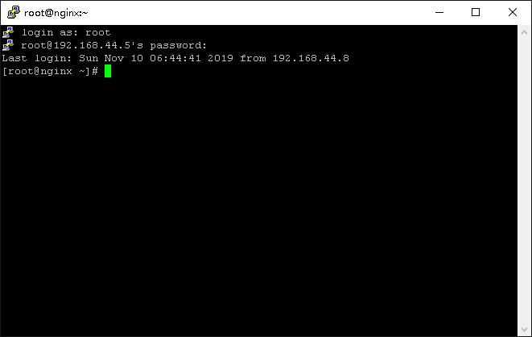

1.5 通过 SSH 远程登录¶
远程登录¶
从本地主机（用户直接登录的主机）登录到网络上的其他主机（远程主机），将其称为远程登录。

远程登录的指令有很多。
telnet
telnet命令可以在远程主机上运行telnet服务时使用。当您访问远程主机时，就会和登录本地主机时一样发生登录认证。因此输入在远程主机上设定的用户名和密码。另外，由于通信内容是普通文本（明文），所以如果通信线路被窃听的话，就可以很容易地明确账号和密码。
ssh
ssh命令和telnet命令一样，是可以登录到远程主机的命令，访问远程主机时，登录验证将与登录到本地主机时一样。但是，与telnet不同，使用公钥密码对所有包含密码的通信内容进行加密。
注解
关于公钥密码信息，请参考第十章。
ssh命令是免费安装的OpenSSH客户端命令，服务器是sshd。OpenSSH由OpenBSD项目开发。
确认sshd启动¶
本书介绍ssh进行远程登录。另外，在登录目标的主机（服务器）中，由于以sshd启动为前提，所以确认CentOS以及Ubuntu中的sshd的启动不存在。
CentOS的sshd
在CentOS中，sshd已经安装完毕，并且开机自动启动，因此没有服务器端设置。
# systemctl status sshd ● sshd.service - OpenSSH server daemon Loaded: loaded (/usr/lib/systemd/system/sshd.service; enabled; vendor preset: enabled) Active: active (running) since Sun 2019-11-17 00:15:00 EST; 3h 11min ago Docs: man:sshd(8) man:sshd_config(5) Main PID: 1126 (sshd) Tasks: 1 (limit: 23619) Memory: 4.6M CGroup: /system.slice/sshd.service └─1126 /usr/sbin/sshd -D -oCiphers=aes256-gcm@openssh.com,chacha20-poly1305@openssh.com,aes256-ctr> ...忽略...另外，sshd在初始设定中使用22号端口。远程登录时，除了远程主机名之外，还提供了访问此端口号所需的信息。
# netstat -tlnp Active Internet connections (only servers) Proto Recv-Q Send-Q Local Address Foreign Address State PID/Program name tcp 0 0 192.168.122.1:53 0.0.0.0:* LISTEN 2568/dnsmasq tcp 0 0 0.0.0.0:22 0.0.0.0:* LISTEN 1126/sshd tcp 0 0 127.0.0.1:631 0.0.0.0:* LISTEN 8018/cupsd tcp 0 0 0.0.0.0:111 0.0.0.0:* LISTEN 1/systemd tcp6 0 0 :::22 :::* LISTEN 1126/sshd tcp6 0 0 ::1:631 :::* LISTEN 8018/cupsd tcp6 0 0 :::111 :::* LISTEN 1/systemd
Uubuntu的sshd
由于在Ubuntu中没有安装sshd，所以运行以下命令进行安装。
注解
sshd被提供为openssh-server程序包。有关软件包的更多信息，请参考第六章内容。
$ dpkg -l | grep openssh-server $ ←确认OpenSSH未安装 $ sudo apt install openssh-server ←安装 [sudo] ubuntu 的密码： 正在读取软件包列表... 完成 正在分析软件包的依赖关系树 正在读取状态信息... 完成 ...省略... 您希望继续执行吗？ [Y/n] y ←输入【y】
安装完成后，请检查sshd的状态。在下面的执行结果中，您可以看到它是启动（Active）的。
$ sudo systemctl status sshd ● ssh.service - OpenBSD Secure Shell server Loaded: loaded (/lib/systemd/system/ssh.service; enabled; vendor preset: enabled) Active: active (running) since Sun 2019-11-17 15:40:49 CST; 56min ago Main PID: 4814 (sshd) Tasks: 1 (limit: 4646) CGroup: /system.slice/ssh.service └─4814 /usr/sbin/sshd -D ...忽略...
ssh远程登录¶
那么，从本地主机（客户端）进行远程登录。由于CentOS和Ubuntu的方法都是相同的。所以在此记载CentOS的运行结果。
ssh命令示例
如果本地主机（客户端）是Linux，请使用ssh命令。例如，在以下前提下执行：
客户端的主机名为“centos-1.localdomain”，服务器的主机名为“centos-2.localdomain”
客户端的IP地址为“10.0.2.16”，服务器的IP地址为“10.0.2.15”
客户端主机以“centos”的身份登录
作为“centos”远程登录到服务器主机
首先，请先看示例一。ssh命令后，指定主机名。由于省略了用户名，因此使用客户端的当前用户名（在此为“centos”）。此外，首次连接到主机时，OpenSSH将显示一条警告信息，如果出现警告，请输入“yes”。
如上述示例所示，登录成功，操作结束后注销登录。要注销，请运行`exit`命令。
接下来，请看示例二。也可以指定IP地址而不是主机名。另外，登录时指定用户名时，指定为“-l 用户名”。
[centos@centos-2 ~]$ ssh -l centos 10.0.2.15 ...省略...
> 示例中的centos@centos-2提示意味着用户centos已经登录到主机centos-2。此外，“#”表示当前用户为root，“$”是以普通用户身份登录的，相关内容请参考第三章。
从Windows远程登录到Linux主机
由于Microsoft Windows中（根据使用的版本不同）不包含SSH客户端，所以提供了几个用于Windows的SSH客户端，包括免费、商用。如果导入这些的话，可以通过SSH从Windows远程操作Linux主机。在本书中，将对Windows中使用的SSH客户端之一的PuTTY的使用方法进行说明。
注解
PuTTY是一款集成虚拟终端、系统控制台和网络文件传输为一体的自由及开放源代码的程序。它支持多种网络协议，包括SCP，SSH，Telnet，rlogin和原始的套接字连接。它也可以连接到串行端口。其软件名字“PuTTY”没有特殊含义。更详细的内容请参考下方的URL： https://www.putty.org/
启动PuTTY
双击桌面“PuTTY”快捷方式，当桌面没有快捷方式时，请从开始菜单启动。

指定目标
运行 PuTTY 就可以看到如下界面：

在“Host Name(or IP Address)” 框内输入服务器的 IP 或主机名，选择SSH协议，SSH 协议默认端口为22，如果你修改了 SSH 协议的端口号，记得修改此处端口号。如果希望把这次的输入保存起来，方便以后再次登录，可以在“Saved Sessions”框内输入会话保存的名称，比如“Web Server”，之后点击保存即可。
最后点下面的 “Open” 按钮，输入正确的用户名和口令，就可以登录服务器了。首次登录一台主机时会看到这个安全告警的对话框：

这是要告诉你登录的主机密钥指纹，点“是”就保存起来，以后就不会再弹出这个窗口，然后就正常登录。点击“否”不保存，下次登录还会弹出这个对话框，但是也可以正常登录。点击“取消”则取消此次登录。


{kind=link}
{kind=link}
{kind=link}